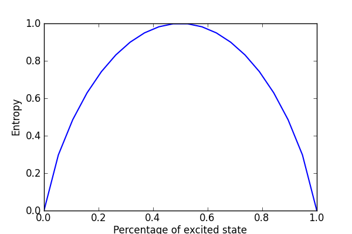

Von-Neumann entropy of a binary mixture of \(\left|\uparrow\right>\) and \(\left|\downarrow\right>\) states¶
Calculates the entropy of a mixture of \(a\left|\uparrow\right>\left<\uparrow\right| + (1-a)\left|\downarrow\right>\left<\downarrow\right|\) states as the mixing parameter \(a\) is varied from 0 to 1.
from qutip import *
from pylab import *
a=linspace(0,1,20)
out=zeros(len(a))
for k in range(len(a)):
x=a[k]*ket2dm(basis(2,0))
y=(1-a[k])*ket2dm(basis(2,1))
z=x+y
rho=Qobj(z)
out[k]=entropy_vn(rho)
fig=figure(figsize=(6,4))
plot(a,out,lw=1.5)
xlabel('Percentage of excited state')
ylabel('Entropy')
savefig('examples-entropy.png')
close(fig)
